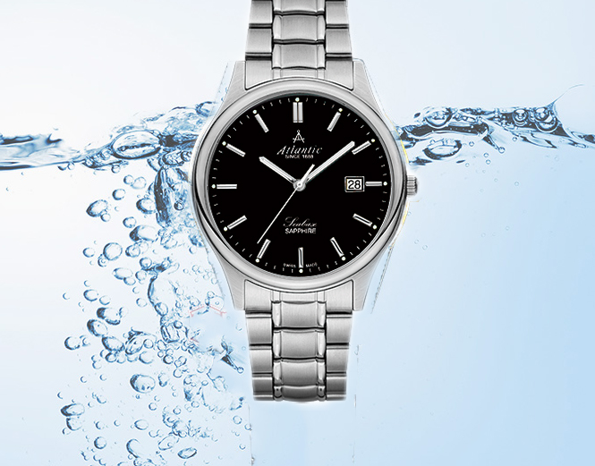
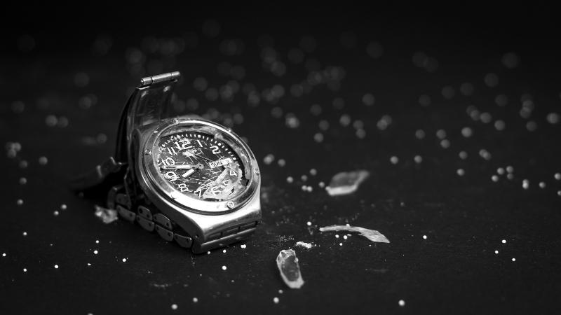

The water resistance of the watch was invented by the masters of fine Swiss watchmaking. In the 60s of the last century, people debated the term "Waterproof". It is thought that the term "waterproof" is misleading to consumers. Later, the US Federal Trade Commission unanimously used the term "Water-Resistant" and is used to this day. All initial product testing is carried out under standard conditions so the actual results will be very different. That proves that the watch cannot be completely waterproof.

Cause the watch got into water
Due to impact: The impact of external forces on your watch may cause the details to no longer become cohesive.
Press the latch when in contact with water: Accidentally or intentionally pressing the latch will get into the water. If you accidentally push the button while in contact with water, even for a split second, you will be in the water. Taking the watch to the shower is easy to press the latch when washing the body.
Excessive exposure to detergents: Taking the watch to the shower or washing the dishes… will cause soap, dirt and dead cells to creep into the crevices. They come into contact with the ring and the rubber ring, causing the rubber band to rot and expand gradually.
Salt exposure: Salt is present in seawater and our sweat. When exposed to the watch pin for a long time, it will cause a gap so it is easy to enter the water.
Exposure to high temperature environments: High temperature environments are not good for your watch. Specifically, in hot weather conditions in the summer or washing hands, bathing with hot water in winter. This will cause the rubber band to expand quickly and affect the mechanical parts that can cause damage to your watch.

A watch's waterproof index unit is usually printed on the dial or engraved on the back of the watch. Depending on the regions, territories, manufacturers have different symbols. The symbols we see most often are BAR, ATM (indicating the water pressure that the watch can withstand) or M "meter" indicating the depth of water. Each BAR or ATM is equivalent to 10 meters below the surface of the water. Here are the basic water resistance parameters of most wristwatches:
30M, 3ATM, 3BAR (or just say Water Resistant) - Only water resistant at hand washing, rain.
50M, 5ATM, 5BAR - Used in swimming, river diving (cannot be used in scuba diving, strong water sports...)
100M, 10 ATM, 10BAR - Used in swimming, river diving, scuba diving, not used when playing strong water sports...
Watch water resistance:
The thinner the watch, the easier it is to enter the water. Because the thinner the watch, the back and core rings are very thin, so it is easy to get into the water. This is often the case even with expensive watches costing several tens of millions of dollars. It sounds ridiculous, but it's true, the seller is also very "excited" to sell these watches because they have to bring back the warranty company and the discomfort from customers. There are many cases that cannot be repaired because the machine has rusted. Many customers wonder "the watch I bought for several tens of millions of dollars, but it got into the water. But it's true!.
Ultra-thin watch - Poor water resistance
Thin watch (thin device, thin battery) - Average water resistance
Women's shaker watch - Poor or medium water resistance (3ATM).
Watches with leather straps - Usually medium water resistant.
Sports watches, Chronograph watches - Usually water resistant to the level of pressure when swimming, some specialized types can withstand pressure while diving.
The watch has a good waterproof glass seal, knob gasket, and bottom gasket when in its original state (when changing the gasket, it will be worse).
Of durable goods, even if you buy a watch that costs tens of millions or even hundreds of millions, it is completely understandable if you use it incorrectly and do not know how to properly maintain it so that the watch is damaged. . When your watch is in water, the best way is to bring it to the store or genuine dealer for warranty to avoid unnecessary damage.
Q&A ABOUT WATCHES
Top 10 frequently asked questions about wristwatches
FAQ about watches: How many types of watch glass are there?
FAQ about watches: How many types of watch straps are there?